Start on your iPhone. Track every set from your watch. No unlocking your phone.
See it on the watch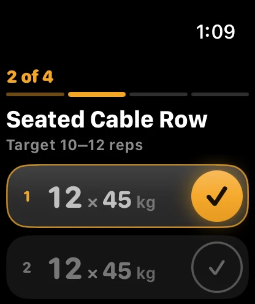
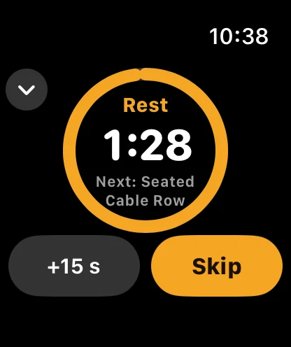
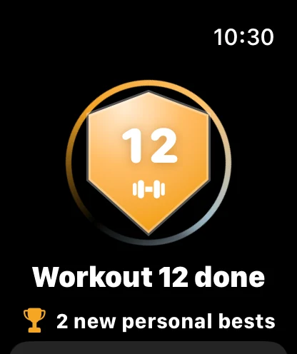
One exercise per screen. Swipe left and right. Always know where you're up to.
Swipe through your workout. "2 of 4" sits at the top so you always know where you are. The next set is highlighted, ready to go.
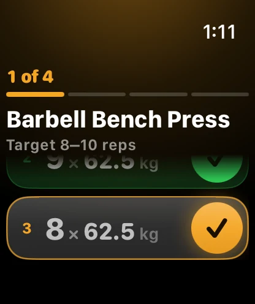
Tick a set to log the numbers already filled in. Did 15 instead of 12? Tap the set, even after ticking it, and type the real number. The Digital Crown nudges it too.
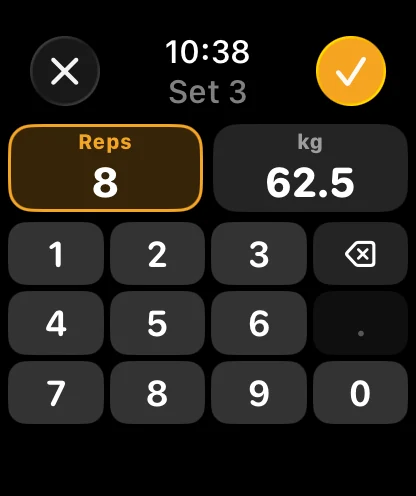
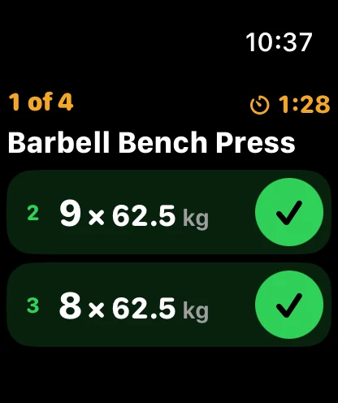
A tick starts your rest timer, the same one your phone shows. A tap on your wrist at 3, 2, 1, then a firm buzz when it's time to go. +15 s or Skip if you need it.
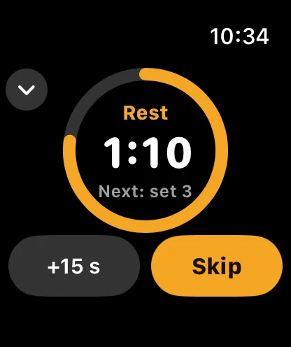
Finish on the watch, rate how hard it was on the dial with the Digital Crown, press Complete. Then the same celebration as your phone, with your workout number and personal bests.
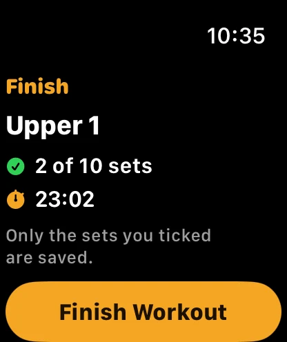
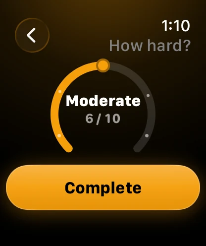
Start a workout on your phone and JF Coach opens on your watch. It keeps working with your phone locked in your pocket, and saves the workout to Apple Health.
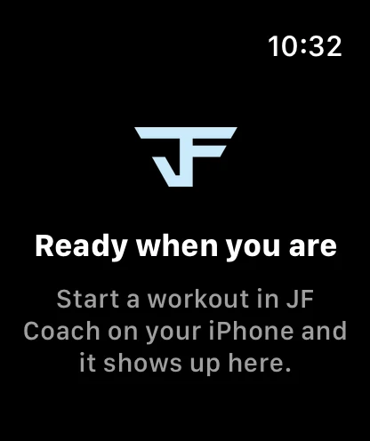
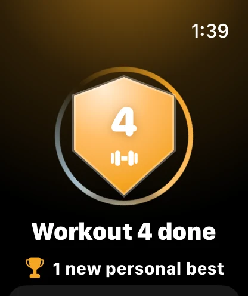
Every tick on your wrist lands on your phone, and the other way round. Real test run, iPhone and Apple Watch side by side.
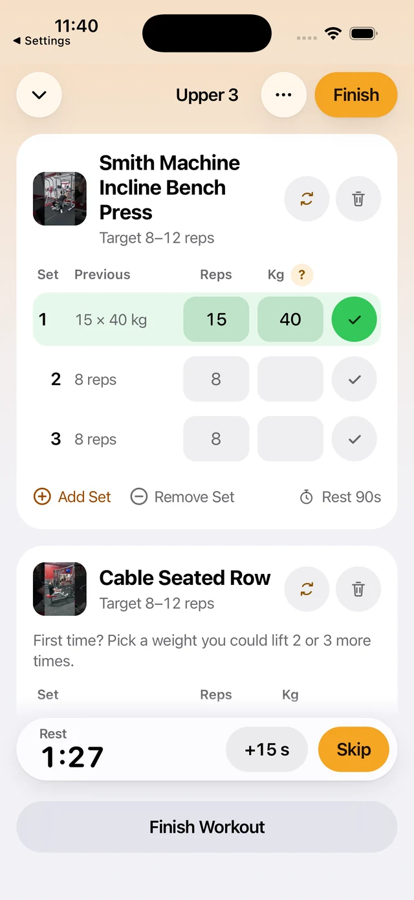
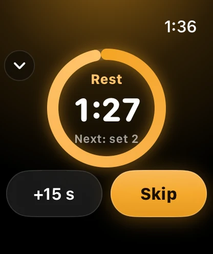
15 × 40 kg logged on the phone, rest running on both.
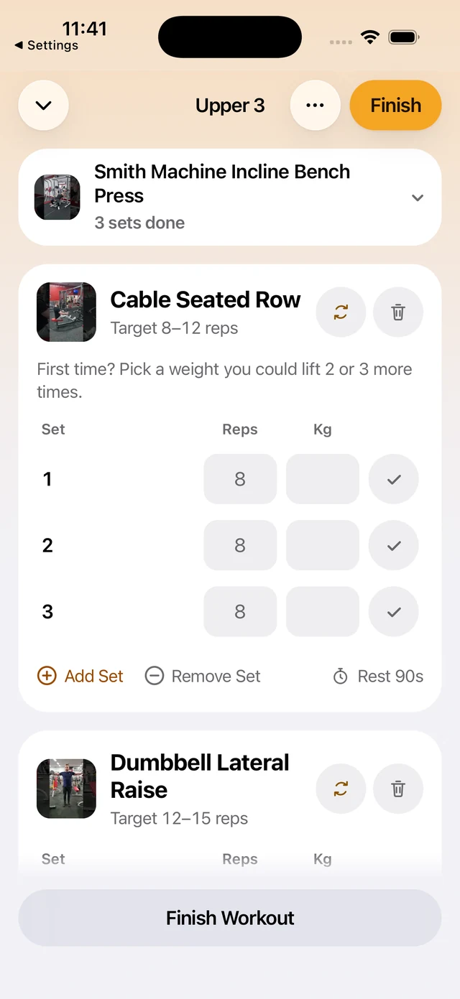
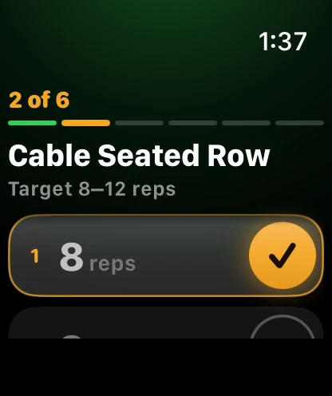
Last set done: the phone folds the exercise, the watch moves to 2 of 6.
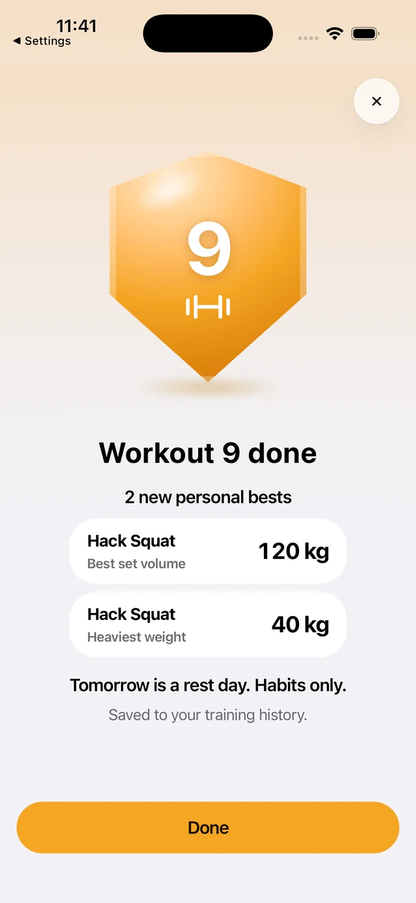
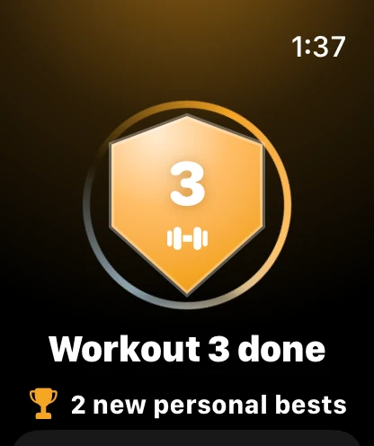
Rated and completed on the watch. Saved, with the same PBs on both.
The same app for Wear OS. Same rules, same look, built for round screens.
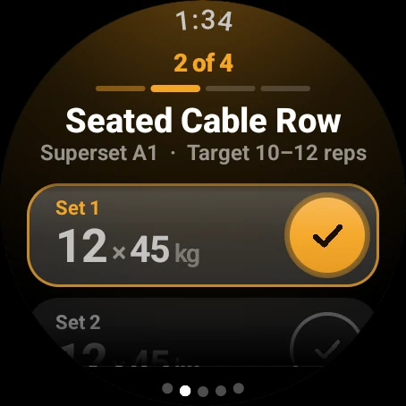
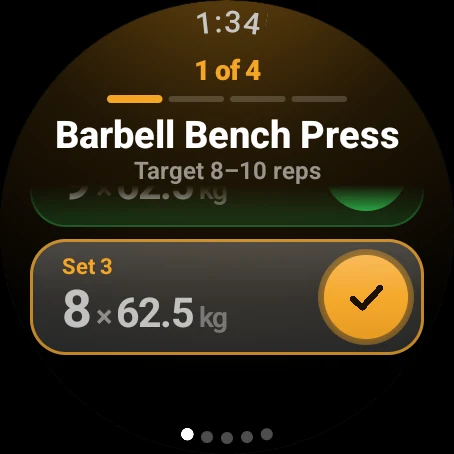
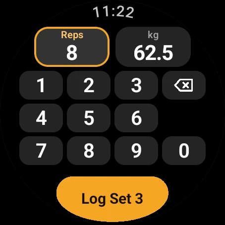
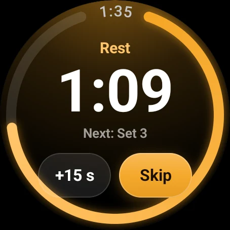
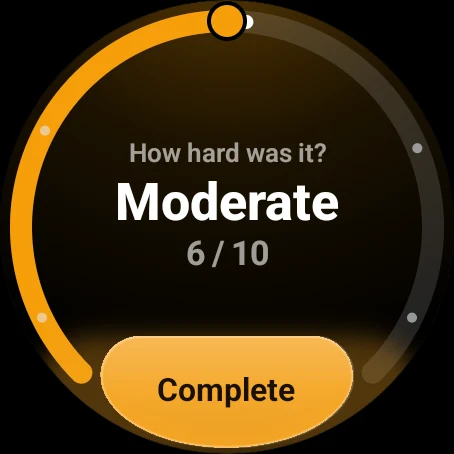
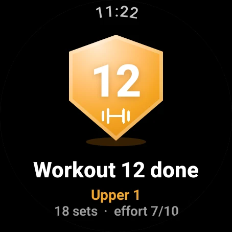
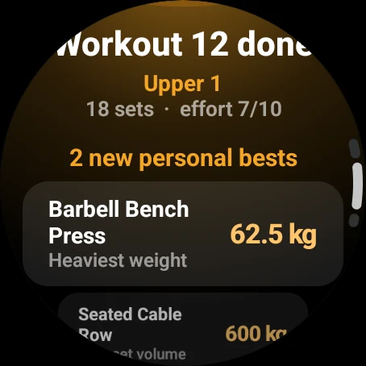
Sunday 4 October 2026.